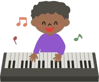

Toque colorido
Nosso teclado é especialmente projetado para atender as necessidades de crianças com deficiência auditiva, oferecendo uma experiência musical rica e acessível.
Características Principais:
- Vibração: O teclado vem equipado com um sistema de vibração que permite às crianças sentir as notas musicais.
- Design Ergonômico: O teclado é desenhado com bordas suaves e materiais seguros para garantir a segurança e o conforto das crianças.
- Modo Interativo: O teclado inclui modos interativos que guiam as crianças em atividades musicais, incentivando a aprendizagem e a exploração. As atividades são projetadas para serem acessíveis e estimulantes, ajudando no desenvolvimento de habilidades motoras e coordenação.
- Conectividade: Equipado com opções de conectividade, o teclado pode ser conectado a aplicativos móveis e outros dispositivos inteligentes, ampliando as possibilidades de aprendizado e diversão.
- Sustentabilidade: Fabricado com materiais ecológicos e sustentáveis, o teclado reflete nosso compromisso com o meio ambiente e a criação de produtos que respeitam a natureza.